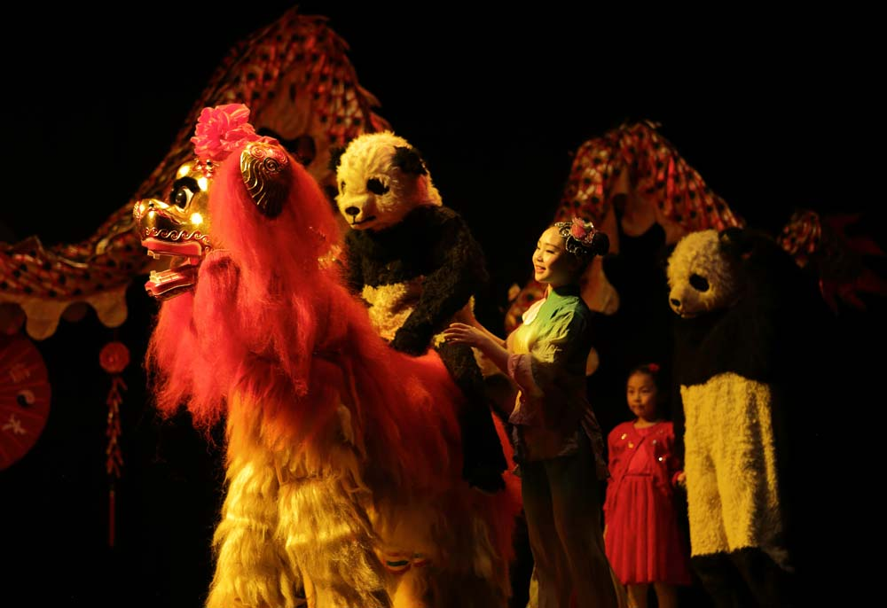

Chinese New Year Show
中国春节

Touring across the country to celebrate the biggest festive event on the Chinese calendar, Jinlong’s ‘Chinese New Year Extravaganza’ is a unique and exciting show of cultural spectacle featuring a team of performers showcasing amazing Chinese performing arts.